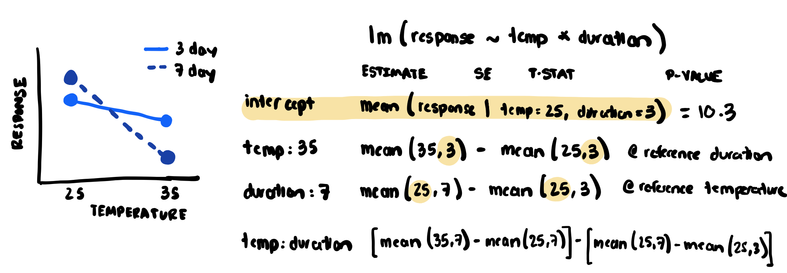
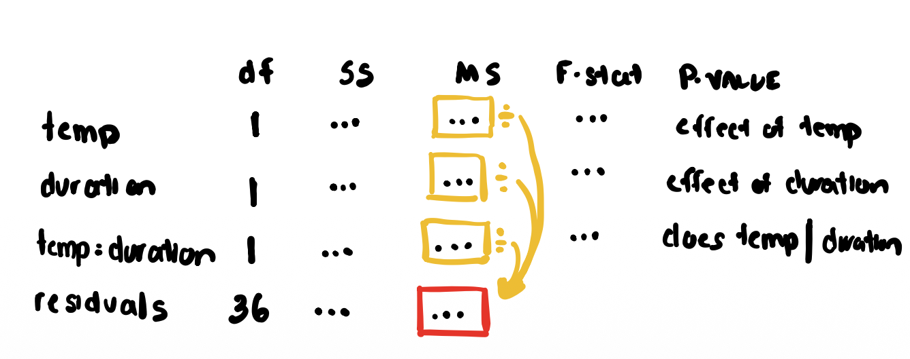
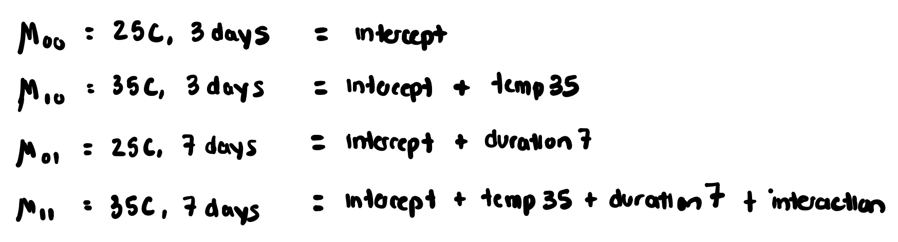
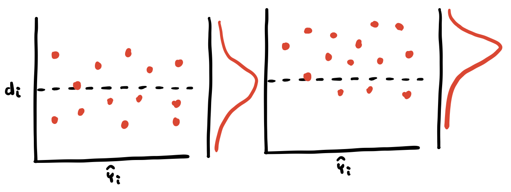
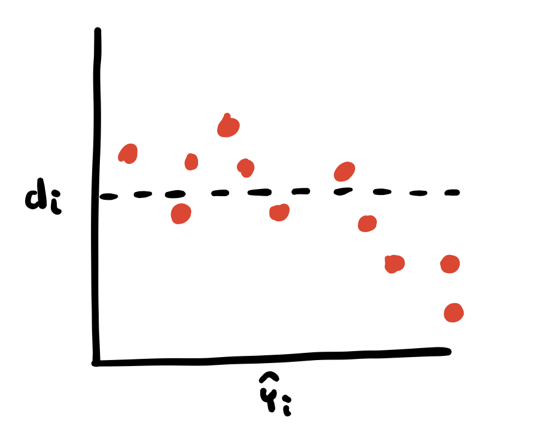
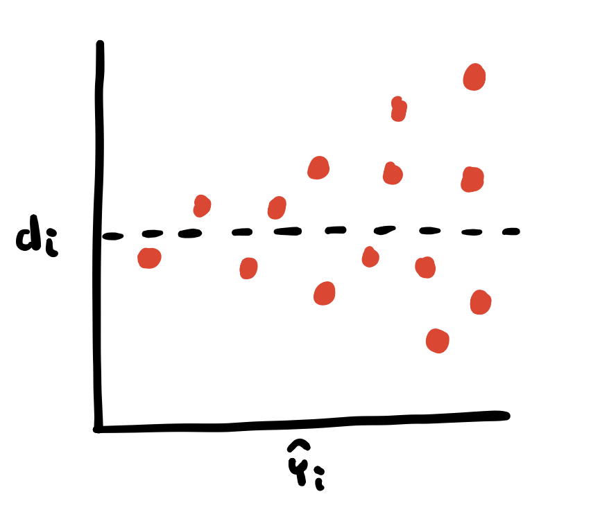

A quiz - what is it? It’s a small assessment of knowledge, but that’s not important right now.
Let’s check our ANOVA memory from last week…
We’ve learned a few ways to assess the differences between samples of data, so far mostly through comparing the expected values, or means. These questions will address the concepts we’ve discussed so far.
Assume we have 3 independent samples of plants grown in different fertilizer regimes and we want to compare their total height after 30 days. Given the choice between conducting and ANOVA and three independent, two-sample t-tests, which would you choose and why?
All this talk of Z-tests, one-sample t-tests, two-sample t-tests, and dependent and independent t-tests is making my head spin! Help me! Why do we use t-tests rather than z-tests most of the time? What’s the difference between dependent and independent two-sample t-tests?
Look! I did an ANOVA! What the *!&$ does it mean?! Give me a 30-second elevator pitch about what this particular summary() output tells us.
Call:
lm(formula = size_cm ~ trt, data = w2.fact.df)
Residuals:
Min 1Q Median 3Q Max
-4.4641 -2.1500 -0.1284 1.3719 5.5777
Coefficients:
Estimate Std. Error t value Pr(>|t|)
(Intercept) 6.3872 0.8894 7.181 1.01e-07 ***
trttrtA -0.2686 1.2578 -0.214 0.832
trttrtB 1.3430 1.2578 1.068 0.295
---
Signif. codes: 0 ‘***’ 0.001 ‘**’ 0.01 ‘*’ 0.05 ‘.’ 0.1 ‘ ’ 1
Residual standard error: 2.813 on 27 degrees of freedom
Multiple R-squared: 0.06525, Adjusted R-squared: -0.003987
F-statistic: 0.9424 on 2 and 27 DF, p-value: 0.4021
Nice work!
Two-way ANOVA
Two-way ANOVA
Last week, we discussed 1-factor or “1-way” ANOVA. This let us compare the means of 2+ groups and determine whether there was any evidence that one or more groups were different than the others.
For example, is there a difference in the mean number of insects captured among 3 different colored sticky cards placed adjacent to a soybean field.
Cool! But what about when we have an experiment with more than 1 treatment factor (e.g., temperature and precipitation?)
Analysis of variance (ANOVA)
Two-way ANOVA
In a factorial design, two (or more) categorical variables are “crossed” with one another (e.g., two levels of temperature and two levels of irrigation)
This design, also called a fully-factorial, or full-crossed design, yields 4 total treatment combinations that we could analyze in a 1-way ANOVA.
However, such an approach only allows us to determine the impact of each treatment independently, and not their combined or interactive effects with one another!
Two-way ANOVAs let us specifically model the interaction term that examines whether the effect of one treatment variable varies depending on the level of the other treatment.
Example of 2-way ANOVA
Imagine that we are doing an experiment testing the impact of two temperature treatments on the growth of plants. We cross our temperature treatments with duration to understand how the effect of temperature may be mediated by the time of exposure. We can lay out our experimental design as such:
Example of 2-way ANOVA
We could analyze this design using a 1-way ANOVA with each treatment combination as an treatment treatment.
Example of 2-way ANOVA
When we build our ANOVA table and calculate our p-values, we’re simply testing whether there is some difference among out groups. That is to say, all of our variation is lumped into the treatment variable (i.e., among-group differences)
Caution
Conducting our analyis in this manner doesn’t allow us to partition the impact of each of our factors of interest!
Example of 2-way ANOVA
Instead, we an build our model to account for the experimental design, fitting terms for both our temperature and duration, as well as their interaction!

Example of 2-way ANOVA
Now, when we build our ANOVA table, we can explicitly partition the variance between our two treatments and their interactive effect
<<<<<<< HEAD
While the r value quantifies the correlation between our variables, it tells us nothing about uncertainty or the fit/usefullness of our model because…
=======

>>>>>>> 5cd9c72 (update labs)
Why can’t we just stop at our correlation coefficient?
Linear regression lets us futher build out the model of our system so that we can estimate the strength of a biological relationship rather than simply a mathematical one!
Example of 2-way ANOVA
We can further visualize the how the 2-way anova differs from the 1-way anova by reconsructing the group means of our four treatment combinations:

Analysis of variance (ANOVA)
Two-way ANOVA | The ANOVA table
Source
df
SS
MS
F-ratio
P-value
Factor A
\(a - 1\)
(see PES pg. 305)
\(\frac{SS_{factor A}}{df_{factor A}}\)
\(\frac{MS_A}{MS_{error}}\)
Factor B
\(b - 1\)
(see PES pg. 305)
\(\frac{SS_{factor B}}{df_{factor B}}\)
\(\frac{MS_B}{MS_{error}}\)
A x B interaction
\((a-1)(b-1)\)
(see PES pg. 305)
\(\frac{SS_{interaction}}{df_{interaction}}\)
\(\frac{MS_{AB}}{MS_{error}}\)
Error
\(ab(n-1)\)
(see PES pg. 305)
\(\frac{SS_{error}}{df_{error}}\)
Total
\(abn-1\)
(see PES pg. 305)
Here, you can test 3 \(F\)-ratios: two main effects and their interaction. All use the \(MS_{error}\) term in the denominator!
Visualizing statistical interactions
Model diagnostics
Linear model assumptions
ANOVA, Linear Models (regression), t-tests, and beyond!
Model is correct
Samples are independent across and within treatments
Variance is homogeneous among groups (i.e., each group contributes ~ equally to the within group sum of squares; \(\sigma_1^2 = \sigma_2^2 = ... = \sigma_k^2\))
Residuals are normally distributed
These assumptions are listed from mostest to most important (because none of them are not important)
A quiz!
Let’s check our two-way ANOVA and regression memory from last week…
We’re slowly building up an arsenal of different linear models that we can use to test hypotheses about both differences between samples (ANOVA), and relationships between variables (regression)!
Let’s imagine we did an experiment where we manipulated two categorical variables, temperature and water availability for plants, with two levels (high and low) for each.
What type of experiment is this called?
What sort of analysis should we use to test for the effects of temperature and water on our plant response variables? Defend your choice of analysis.
We fit a model for this experiment with lm(plant_response ~ temp_trt * water_trt) and print the summary below. What is it telling us? Sketch out a figure that shows approximately what these results look like.
Residuals:
Min 1Q Median 3Q Max
-5.1032 -1.7324 0.1186 1.9541 5.4410
Coefficients:
Estimate Std. Error t value Pr(>|t|)
(Intercept) 15.420 0.812 18.99 < 2e-16 ***
temp_trtWarm 3.180 1.149 2.77 0.008 **
water_trtHigh 4.025 1.149 3.50 0.001 ***
temp_trtWarm:water_trtHigh 2.635 1.625 1.62 0.112
---
Signif. codes:
0 ‘***’ 0.001 ‘**’ 0.01 ‘*’ 0.05 ‘.’ 0.1 ‘ ’ 1
Residual standard error: 2.58 on 36 degrees of freedom
Multiple R-squared: 0.541, Adjusted R-squared: 0.504
F-statistic: 14.1 on 3 and 36 DF, p-value: 1.6e-06
Now let’s imagine that we conducted a study where we examined how plant growth responded to a natural temperature variation across the whole biogeographical range of the species.
Here’s the print out of that linear regression model summary. What is it telling us?
Coefficients:
Estimate Std. Error t value Pr(>|t|)
(Intercept) 12.3845 1.7421 7.11 1.2e-09 ***
temperature_C 0.8532 0.1216 7.02 1.8e-09 ***
---
Signif. codes:
0 ‘***’ 0.001 ‘**’ 0.01 ‘*’ 0.05 ‘.’ 0.1 ‘ ’ 1
Residual standard error: 3.12 on 48 degrees of freedom
Multiple R-squared: 0.506, Adjusted R-squared: 0.495
F-statistic: 49.3 on 1 and 48 DF, p-value: 1.8e-09
We take a look at our residual vs. fitted diagnostic plot to see this. What does this indicate?
How should we interpret the “significance” of this model given the manner in which the data were collected?
Linear model assumptions
Assumption 1: Model is correct
This is the art of statistics! We can plug experimental data into just about any model framework in the computer and have it spit out some stuff for us to interpret. But is it meaningful?
Folks tend to look for p-values before they look for anything else. This is a one of the perverse incentives from the publishing rat-race we’re all apart of.
This assumption is best addressed through common sense and attention to detail. And…
…conducting your analyses consistent with the manner in which you conduct your experiment/observational studies.
Linear model assumptions
Assumption 2: Samples are independent across and within treatments
These details are best sorted at the experimental and study design phase. Recall the discussions we’ve had about bias, randomization, etc.
This assumption is nothing that we can test or visualize to assess; we simply must critique the experimental methods/procedure used to collect our samples.
Recall the discussions we’ve had about bias, randomization, etc.
Linear model assumptions
Assumption 3: Variance is homogenous among groups
Equal variance can be assessed using tests (e.g., Levene’s test), but in practice we tend to assess this assumption visually using residual plots
Till now, we have been simplifying this assumption, saying something like: each treatment is a random sample \(Y_{ij} \sim N(\mu_i, \sigma_i^2)\). Technically, this isn’t quite correct (but it gets us most of the way there)
>>>>>>> 5cd9c72 (update labs)
We actually care the most about our residual error distribution; that is, we want our model to be “wrong” consistently and have these errors follow a random sample \(Y_{ij} \sim N(0, \sigma_i^2)\)
Cool. But how do we actually assess these assumptions in our analyses?
Residual plots
For linear models, we can assess many of our assumptions by examining residual plots
A residual plot graphs our residual values, \(r_i\) against our fitted model values, \(\hat{y}_i\).
If we add up all of our residuals, \(\sum_{i=1}^{n} r_i = 0\) and \(\sum_{i=1}^{n} r_i^2 = SSError\) aka within-group variance
We can assess our assumptions of equal variance and normally distributed residuals with a single residual plot!
Residual plots
Ideal residual plots
Ideally, residual plots should look like a random scattering of points surrounding a horizontal line with a y-intercept of 0 (i.e., no difference between fitted value and actual data)
We also want to see our residuals normally distributed about \(\mu_{d_i} = 0\) - we don’t want our model to be systematically over- or under-predicting true values. this would indicate we’re missing an important variable from our model
>>>>>>> 5cd9c72 (update labs)

<<<<<<< HEAD
\[SSTotal = SSReg + SSErr\]
=======
Residual plots
Non-linear fit
When residuals are correlated with the fitted values, this is indicative of a non-linear relationship between our predictor and response variable.
>>>>>>> 5cd9c72 (update labs)

Residual plots
Non-linear fit
A “U” or inverted “U” shape to our residuals tends to indicate a quadratic rather than a linear relationship between our predictor and response variable.
Residual plots
Heteroscedasticity
Residual plots displaying an increasing or decreasing funnel of points when plotted against fitted indicate that our nonhomogeneous variance, or heteroscedasticity

Residual plots
Outliers/leverage
Residual plots can also help us evaluate whether certain values may be outliers and exhibiting significant leverage on our fitted models.
<<<<<<< HEAD
We can then calculate the tail probability on \(F_{1, 5}\), p-value << 0.01. Reject \(H_0\)! We have strong evidence that the slope is not 0.
Simple linear regression
Snowfall example | Step 4: Hypothesis testing
Alternatively, we can conduct this hypothesis test using a t-test:
\(\hat{b}_1\) is a function of our random variables \(X\) and \(Y\), thus it is itself a random variable
Because \(\hat{b}_1\) is a weighted sum of random distributions, it also has a normal distribution so we can use the t-test to determine if \(\hat{b}_1\) is significantly different from 0.
This only holds up when our model has a numerator degrees of freedom of 1 (i.e., 1 predictor variable in the model!)
Simple linear regression
Snowfall example | Step 4: Hypothesis testing
We can conduct a similar t-test to assess the significance of our model intercept, this is similar to what we did in 1 and 2-way ANOVA. I’ll spare you the math here, and just jump to the conclusions
If we are testing \(H_0: b_0 = 0\) then the t-test for the intercept can be seen as choosing between \(Y_i = b_1 x_1 + e_i\) (a model with no intercept) and the model \(Y_i = b_0 + b_1 * x_i + e_i\) under the \(H_A\).
We almost always leave the intercept in our models, unless we have a strong biological rationale for forcing the intercept through the origin (0,0).
Simple linear regression
Snowfall example | Step 5: assessing model fit
\(R^2\) can be used to assess model fit
\(R^2 = \frac{SS~Regression}{SS~Total}\)
\(R^2\) represents the proportion of the total SS that is explained by the regression model
Link between \(r\) and \(R^2\)
Correlation is important in regression analysis
In lab, you will (or have) learned that \(R^2\) is the proportion of variation in the response variable explained by our experimental factor
Put mathematically, \(R^2 = \frac{SSTrt}{SSTotal}\)
For a simple linear regression \(R^2 = r^2\).
Put another way, \(r = \sqrt{R^2}\)
Simple linear regression
Snowfall example | Step 6: make predictions
Yay! We have a model! We can use it to make predictions, like, how many hours should we expect to clear the streets given 4” of snowfall?
Be careful! Interpolation (predicting between our observed values) is generally okay, but extrapolation (predicting outside our observed values) may be inaccurate if the linear relationship changes outside the range of our observed variables.